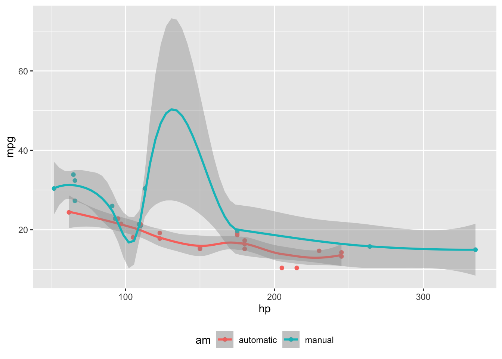

```{r}
library(leaflet)
m = leaflet() %>% addTiles()
m %>% addPopups(-99.152942, 19.411332, 'Here is the <b>the OMC lab</b>, HIMFG')
```code
markdown layout
Abstract
This showcases
Usage
Arbitrary Margin Content
You can include anything in the margin by places the class .column-margin on the element. See an example on the right about the first fundamental theorem of calculus.
We know from the first fundamental theorem of calculus that for \(x\) in \([a, b]\):
\[\frac{d}{dx}\left( \int_{a}^{x} f(u)\,du\right)=f(x).\]
Arbitrary Full Width Content
Any content can span to the full width of the page, simply place the element in a div and add the class column-page-right. For example, the following code will display its contents as full width.
::: {.fullwidth}
Any _full width_ content here.
:::Results

Outset content…

```{r}
#| column: page
knitr::kable(
mtcars[1:6, 1:10]
)
```| mpg | cyl | disp | hp | drat | wt | qsec | vs | am | gear | |
|---|---|---|---|---|---|---|---|---|---|---|
| Mazda RX4 | 21.0 | 6 | 160 | 110 | 3.90 | 2.620 | 16.46 | 0 | 1 | 4 |
| Mazda RX4 Wag | 21.0 | 6 | 160 | 110 | 3.90 | 2.875 | 17.02 | 0 | 1 | 4 |
| Datsun 710 | 22.8 | 4 | 108 | 93 | 3.85 | 2.320 | 18.61 | 1 | 1 | 4 |
| Hornet 4 Drive | 21.4 | 6 | 258 | 110 | 3.08 | 3.215 | 19.44 | 1 | 0 | 3 |
| Hornet Sportabout | 18.7 | 8 | 360 | 175 | 3.15 | 3.440 | 17.02 | 0 | 0 | 3 |
| Valiant | 18.1 | 6 | 225 | 105 | 2.76 | 3.460 | 20.22 | 1 | 0 | 3 |

```{r}
#| column: screen
library(leaflet)
leaflet() %>%
addTiles() %>% # Add default OpenStreetMap map tiles
addMarkers(lng=-99.152942, lat=19.411332, popup="the OMC lab")
```19/19.411537/-99.152864 addMarkers(lng=19.412274320345034, lat=-99.15278095375383, popup=“the OMC lab”) https://www.openstreetmap.org/#map=19/19.411332/-99.152942
m # a map with the default OSM tile layer
m = m %>% setView(-99.152864, 19.411537, zoom = 17) m
```{r}
#| column: screen-inset-shaded
library(leaflet)
leaflet() %>%
addTiles() %>% # Add default OpenStreetMap map tiles
addMarkers(lng=174.768, lat=-36.852, popup="The birthplace of R")
``````{r}
#| column: screen-inset-shaded
#| layout-nrow: 1
plot(cars)
plot(iris)
plot(pressure)
```


We know from the first fundamental theorem of calculus that for \(x\) in \([a, b]\):
\[\frac{d}{dx}\left( \int_{a}^{x} f(u)\,du\right)=f(x).\]
```{r}
#| label: fig-mtcars
#| fig-cap: "MPG vs horsepower, colored by transmission."
#| column: margin
library(ggplot2)
mtcars2 <- mtcars
mtcars2$am <- factor(
mtcars$am, labels = c('automatic', 'manual')
)
ggplot(mtcars2, aes(hp, mpg, color = am)) +
geom_point() +
geom_smooth(formula = y ~ x, method = "loess") +
theme(legend.position = 'bottom')
```
```{r}
#| column: margin
knitr::kable(
mtcars[1:6, 1:3]
)
```| mpg | cyl | disp | |
|---|---|---|---|
| Mazda RX4 | 21.0 | 6 | 160 |
| Mazda RX4 Wag | 21.0 | 6 | 160 |
| Datsun 710 | 22.8 | 4 | 108 |
| Hornet 4 Drive | 21.4 | 6 | 258 |
| Hornet Sportabout | 18.7 | 8 | 360 |
| Valiant | 18.1 | 6 | 225 |
```{r}
#| fig-column: margin
mtcars2 <- mtcars
mtcars2$am <- factor(
mtcars$am, labels = c('automatic', 'manual')
)
knitr::kable(
mtcars[1:6, 1:6]
)
library(ggplot2)
ggplot(mtcars2, aes(hp, mpg, color = am)) +
geom_point() +
geom_smooth(formula = y ~ x, method = "loess") +
theme(legend.position = 'bottom')
```| mpg | cyl | disp | hp | drat | wt | |
|---|---|---|---|---|---|---|
| Mazda RX4 | 21.0 | 6 | 160 | 110 | 3.90 | 2.620 |
| Mazda RX4 Wag | 21.0 | 6 | 160 | 110 | 3.90 | 2.875 |
| Datsun 710 | 22.8 | 4 | 108 | 93 | 3.85 | 2.320 |
| Hornet 4 Drive | 21.4 | 6 | 258 | 110 | 3.08 | 3.215 |
| Hornet Sportabout | 18.7 | 8 | 360 | 175 | 3.15 | 3.440 |
| Valiant | 18.1 | 6 | 225 | 105 | 2.76 | 3.460 |

page 1
page 2
This is a span that has the class
aside which places it in the margin without a footnote number.```{r}
#| label: fig-cap-margin
#| fig-cap: "MPG vs horsepower, colored by transmission."
#| cap-location: margin
library(ggplot2)
mtcars2 <- mtcars
mtcars2$am <- factor(
mtcars$am, labels = c('automatic', 'manual')
)
ggplot(mtcars2, aes(hp, mpg, color = am)) +
geom_point() +
geom_smooth(formula = y ~ x, method = "loess") +
theme(legend.position = 'bottom')
```
```{r}
#| column: screen-inset-right
library(leaflet)
leaflet() %>%
addTiles() %>% # Add default OpenStreetMap map tiles
addMarkers(lng=174.768, lat=-36.852, popup="The birthplace of R")
``````{r}
#| column: page
plot(cars)
```
This content will appear in the margin!